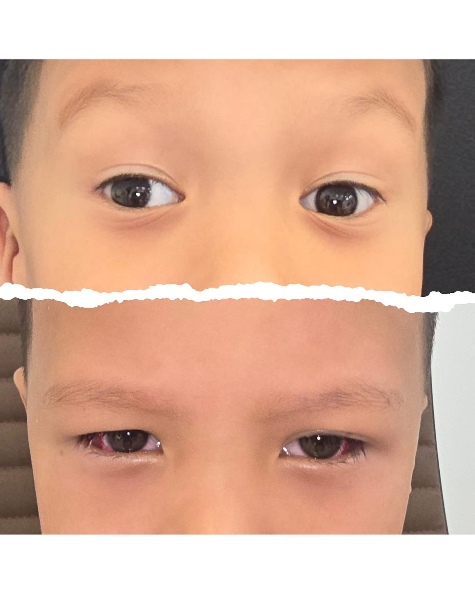
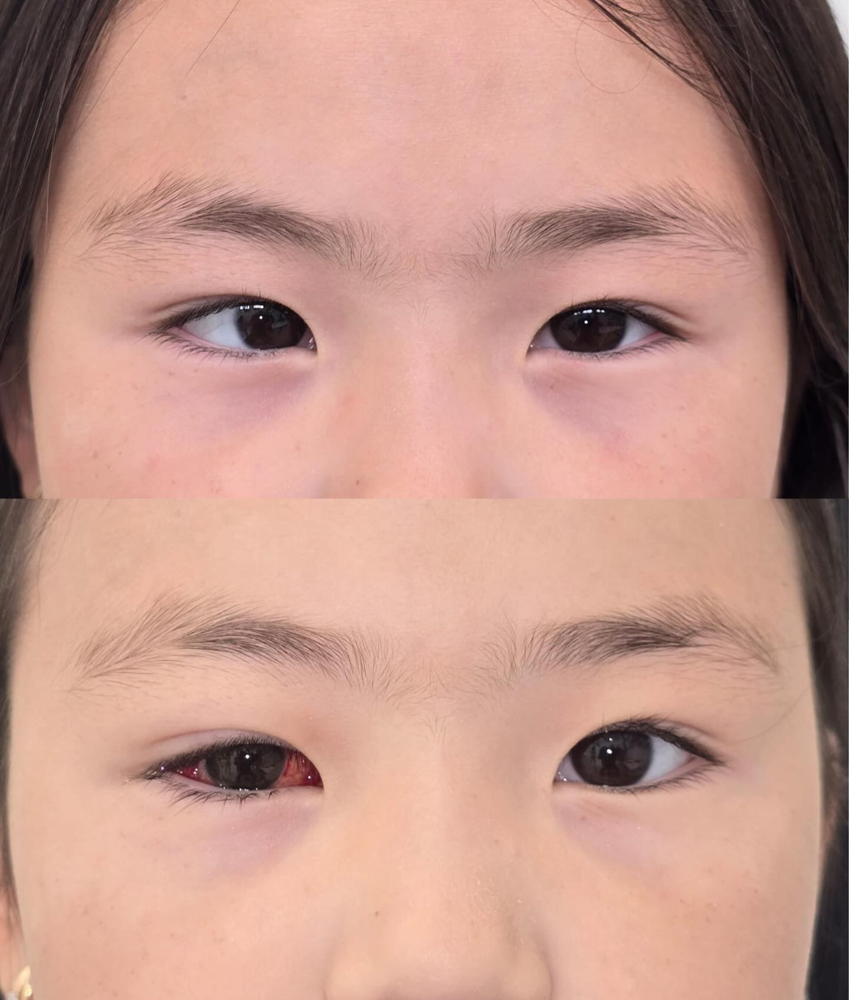
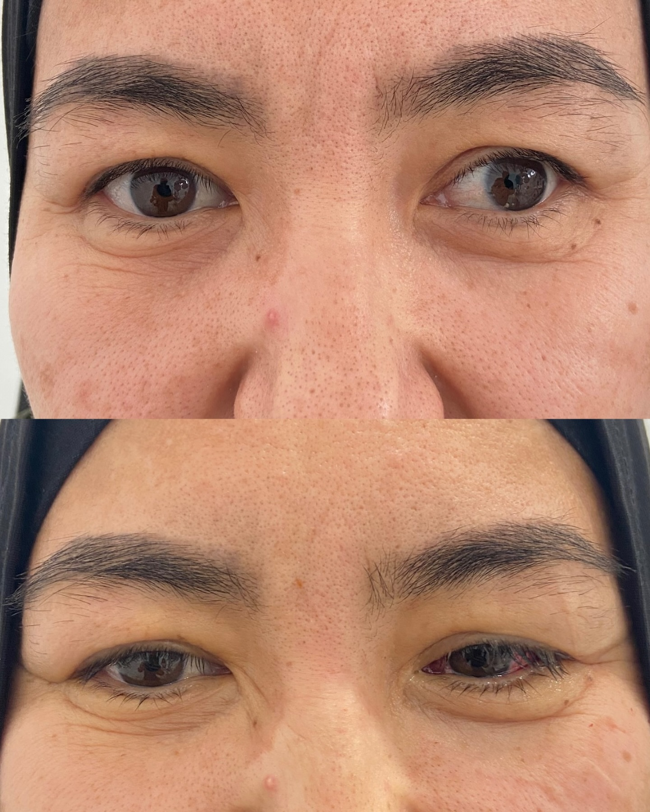
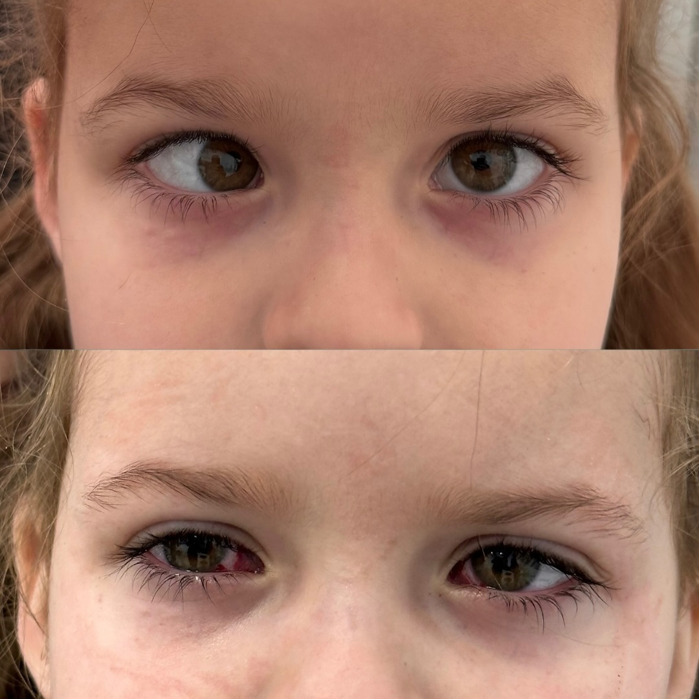

Косоглазие в Алматы: диагностика, лечение и операция
В клинике Asiakoz косоглазие у детей и взрослых оценивают комплексно: проверяют зрение каждого глаза, положение и подвижность глаз, бинокулярные функции и связь с амблиопией. Операции по показаниям проводят офтальмохирурги Орел Талип и Мехмет Есат Текер.
Клиника Asiakoz: Алматы, проспект Райымбека, 176а · страница филиала

 Орел ТалипОфтальмохирург · операция при косоглазии · Алматы
Орел ТалипОфтальмохирург · операция при косоглазии · Алматы
 Мехмет Есат ТекерОфтальмохирург · операция при косоглазии · Алматы
Мехмет Есат ТекерОфтальмохирург · операция при косоглазии · Алматы
Косоглазие — это не только положение глаз
При косоглазии глаза направлены не в одну точку. Задача обследования — понять тип отклонения, проверить зрение каждого глаза и определить, как глаза работают вместе.
Согласованная работа двух глаз помогает оценивать глубину и формировать единое изображение. При косоглазии эта функция может быть нарушена.
У ребёнка мозг может меньше использовать изображение от отклоняющегося глаза. Поэтому важно отдельно проверить остроту зрения и исключить амблиопию.
Косоглазие у взрослого может сопровождаться двоением, неудобным положением головы или трудностями с оценкой глубины. Лечение подбирают по причине и симптомам.
Отклонение может быть врождённым или приобретённым, постоянным или периодическим. Один и тот же внешний признак не означает одинаковый план лечения.
Каким бывает косоглазие
Врач описывает косоглазие по направлению отклонения, стабильности угла, подвижности глаз и другим признакам.
Один или оба глаза отклоняются к носу. Некоторые формы связаны с дальнозоркостью и могут частично или полностью корректироваться очками.
Глаз отклоняется к виску постоянно или периодически. Угол может меняться при взгляде вдаль, усталости или ярком свете.
Один глаз расположен выше или ниже другого. Для плана лечения оценивают движение глаз в разных направлениях взгляда.
При ограничении работы нерва или мышцы могут появляться двоение и вынужденное положение головы. Причину определяют на обследовании.
Самостоятельно определить тип косоглазия по фотографии недостаточно: врачу нужны измерения и проверка зрительных функций.
Косоглазие у детей
Остроту зрения каждого глаза, рефракцию, угол отклонения, подвижность глаз и бинокулярные функции. У маленьких детей методы проверки адаптируют к возрасту.
Косоглазие может сочетаться со снижением зрения одного глаза. Выравнивание глаз и развитие зрения — связанные, но разные задачи лечения.
При некоторых формах сначала назначают очки и лечение амблиопии. Решение об операции принимают по типу косоглазия, измерениям и динамике.
После подбора очков, лечения амблиопии или операции ребёнку могут потребоваться повторные измерения и контроль зрительных функций.
Косоглазие у взрослых
Лечение возможно и во взрослом возрасте. Его цель зависит от ситуации: улучшить положение глаз, уменьшить двоение, расширить удобную зону взгляда или снизить зависимость от призматических очков.
Врач оценивает стабильность угла, перенесённые операции, зрение каждого глаза и реалистичный ожидаемый результат.
Важно установить причину отклонения и двоения. При необходимости офтальмолог рекомендует дополнительные обследования или консультации.
После ранее выполненной хирургии план составляют по новым измерениям и, если доступны, по выпискам о предыдущем вмешательстве.
Хирург обсуждает не только положение глаз, но и двоение, подвижность, бинокулярные функции и ограничения конкретного случая.
Косоглазие и амблиопия: в чём разница
Косоглазие описывает положение глаз. Амблиопия, или «ленивый глаз», — это снижение зрения, которое формируется в детстве, когда мозг недостаточно использует изображение от одного глаза.

Врач может назначить постоянное ношение очков, окклюзию сильного глаза или специальные капли. Схема и длительность зависят от возраста и зрения ребёнка.
Операция меняет положение глаз, но сама по себе не заменяет лечение амблиопии. Очки или окклюзия могут понадобиться до и после хирургии.
Диагностика перед выбором лечения
Объём обследования зависит от возраста, формы косоглазия, жалоб и предыдущего лечения.
Проверка каждого глаза отдельно помогает выявить разницу в зрении и признаки амблиопии.
Врач определяет необходимость очков. У детей исследование может проводиться после специальных капель по показаниям.
Измерения выполняют на разных расстояниях и, при необходимости, в разных направлениях взгляда.
Оценивают работу глазодвигательных мышц и наличие ограничений движения.
Проверяют, может ли мозг объединять изображения от двух глаз и есть ли стереоскопическое зрение.
Офтальмолог исключает другие причины снижения зрения и при необходимости расширяет обследование.
Точный состав диагностики и стоимость уточняются у администратора и врача. На странице не указана неподтверждённая фиксированная цена.
Как лечат косоглазие
План лечения зависит от причины, возраста, зрения каждого глаза, величины угла и задач пациента.
Коррекция дальнозоркости, близорукости или астигматизма может улучшить зрение и при некоторых формах повлиять на положение глаз.
Очки, окклюзия или капли помогают развивать зрение более слабого глаза. Назначения делает детский офтальмолог.
Призматические линзы могут уменьшить двоение у части взрослых пациентов. Возможность такой коррекции определяют после измерений.
Ортоптические упражнения применяются при отдельных нарушениях совместной работы глаз, но не заменяют другие методы при всех формах косоглазия.
Хирургия меняет баланс глазодвигательных мышц и рассматривается, когда по результатам диагностики она соответствует задачам лечения.
Очки, лечение амблиопии, операция и послеоперационное наблюдение могут быть этапами одного плана, а не взаимоисключающими вариантами.
Как проходит операция при косоглазии
Операция выполняется на глазодвигательных мышцах. Хирург изменяет место их прикрепления или длину, чтобы ослабить либо усилить действие выбранных мышц и улучшить положение глаз.
Выбор зависит не от того, какой глаз заметно отклонён, а от типа косоглазия, измерений и расчёта хирурга.
Детям обычно требуется общая анестезия. Для взрослых возможны разные варианты. Конкретный план определяют хирург и анестезиолог.
Цель — улучшить положение глаз и, когда это возможно, функциональные показатели. Точный результат зависит от исходного состояния.
После операции могут сохраняться очки, лечение амблиопии или наблюдение. Иногда требуется дополнительная коррекция.

Операция не предполагает удаления глаза из глазницы. Доступ к мышцам выполняется через ткань, покрывающую белую часть глаза.
Путь от консультации до контроля
Каждый этап зависит от результатов предыдущего — операция не назначается только по фотографии или сообщению.
Запись
Администратор помогает выбрать время и подсказывает, какие предыдущие заключения взять с собой.
Диагностика
Врач проверяет зрение, рефракцию, положение и движения глаз, оценивает бинокулярные функции.
План лечения
Обсуждаются очки, лечение амблиопии, призмы, упражнения для отдельных случаев или операция.
Подготовка
Если операция показана, пациент получает список обследований, рекомендации и план анестезии.
Операция
Хирург корректирует работу выбранных глазодвигательных мышц по индивидуальному расчёту.
Контроль
Врач оценивает заживление и положение глаз, корректирует капли и дальнейший план наблюдения.
Офтальмохирурги по косоглазию в Алматы
В клинике Asiakoz операции при косоглазии у детей и взрослых проводят Орел Талип и Мехмет Есат Текер.
Орел Талип
Офтальмохирург · хирургическое лечение косоглазия
Клиника Asiakoz · Алматы
Профиль врача →Мехмет Есат Текер
Офтальмохирург · хирургическое лечение косоглазия
Клиника Asiakoz · Алматы
Профиль врача →Видеоотзывы пациентов
Пациенты Asiakoz рассказывают о консультации, операции и наблюдении после лечения косоглазия.
Примеры до и после операции
Фотографии показывают положение глаз до и после лечения в отдельных случаях.








Результат индивидуален и зависит от типа косоглазия, исходного угла, зрения каждого глаза, ранее проведённого лечения и других факторов. Фотографии не являются гарантией такого же результата.
Уход и восстановление после операции
После операции глаз может быть красным, слезиться или ощущаться как после попадания песка. Выраженность и длительность этих ощущений различаются. Индивидуальные назначения даёт оперирующий хирург.
Используйте препараты только по схеме врача. Не меняйте длительность лечения самостоятельно.
Не трите глаз и соблюдайте рекомендации по умыванию. Сроки возвращения к контактным линзам уточняются у хирурга.
Возвращение к обычной нагрузке зависит от самочувствия, вида анестезии и объёма вмешательства.
Ограничения по физической нагрузке, плаванию и контактным видам спорта врач определяет индивидуально.
На осмотрах оценивают заживление, положение глаз и дальнейшую необходимость очков или лечения амблиопии.
Если после операции состояние вызывает вопросы или заметно меняется, свяжитесь с лечащей командой и следуйте её рекомендациям.
Результат, ограничения и возможные риски
Цель операции — улучшить положение глаз и решить согласованные с пациентом функциональные или внешние задачи. Итог зависит от формы косоглазия, исходного угла, подвижности глаз, зрения каждого глаза и предыдущих операций.
- может сохраниться остаточное отклонение или со временем измениться положение глаз;
- возможно временное двоение, а в отдельных случаях оно сохраняется дольше;
- могут потребоваться очки, лечение амблиопии или дополнительная операция;
- как при любом вмешательстве, возможны воспаление, кровотечение, рубцевание и реакции на анестезию;
- серьёзные осложнения, включая снижение зрения, встречаются редко, но обсуждаются до операции.
Гарантировать идеальное положение глаз или определённую остроту зрения заранее нельзя. Хирург объясняет ожидаемый результат и риски после очной диагностики.
Вопросы и ответы о косоглазии
Ответы помогают подготовиться к консультации, но не заменяют измерения и осмотр офтальмолога.
Что такое косоглазие?
Косоглазие — это нарушение положения глаз, при котором они направлены не в одну точку. Оно может быть постоянным или периодическим, сходящимся, расходящимся, вертикальным или связанным с ограничением движения глаза.
Косоглазие и амблиопия — это одно и то же?
Нет. Косоглазие описывает положение глаз, а амблиопия — снижение зрения из-за особенностей развития зрительной системы в детстве. Эти состояния могут сочетаться, поэтому зрение каждого глаза оценивают отдельно.
Можно ли лечить косоглазие без операции?
Иногда да. В зависимости от причины и типа косоглазия врач может назначить очки, лечение амблиопии, призматическую коррекцию или упражнения для отдельных нарушений. Операция нужна не каждому пациенту.
Как проходит операция при косоглазии?
Хирург изменяет положение или длину выбранных глазодвигательных мышц, чтобы улучшить положение глаз. Какие мышцы и на одном или двух глазах нужно оперировать, определяют по результатам измерений.
Кто проводит операции при косоглазии в Алматы?
В клинике Asiakoz в Алматы операции при косоглазии проводят офтальмохирурги Орел Талип и Мехмет Есат Текер. Доступные даты приёма и операции уточняются у администратора.
Лечит ли операция амблиопию?
Операция меняет положение глаз, но не заменяет лечение амблиопии. Ребёнку могут потребоваться очки, окклюзия или другое назначенное врачом лечение до и после операции.
Можно ли исправить косоглазие у взрослого?
Да, варианты лечения есть и у взрослых. Выбор между призмами, упражнениями в отдельных случаях и операцией зависит от причины, двоения, стабильности угла и результатов обследования.
Может ли потребоваться повторная операция?
Да. После первой операции может сохраняться или со временем меняться отклонение глаз. Необходимость дополнительного лечения или повторной операции оценивает хирург на контрольных осмотрах.
Какая анестезия используется?
Тип анестезии зависит от возраста, состояния здоровья и объёма операции. Детям обычно требуется общая анестезия; для взрослых возможны разные варианты. Конкретный план определяют хирург и анестезиолог.
Как проходит восстановление после операции?
В первые дни возможны покраснение, слезотечение, ощущение песка или дискомфорт. Врач назначает капли, ограничения и график контрольных осмотров. Срок возвращения к работе, школе и спорту индивидуален.
Какие риски есть у операции?
Возможны остаточное отклонение, двоение, воспаление и другие осложнения. Серьёзные осложнения встречаются редко, но результат нельзя гарантировать заранее. Индивидуальные риски хирург обсуждает до операции.
Сколько стоит лечение и операция при косоглазии?
Стоимость зависит от диагностики, выбранной тактики, объёма операции и анестезии. Точную сумму клиника сообщает после осмотра и составления плана лечения; актуальную стоимость консультации можно уточнить у администратора.
Медицинские источники
Общие сведения о косоглазии, амблиопии, операции и восстановлении сверены с материалами профильных медицинских организаций.
Записаться на консультацию по косоглазию в Алматы
Напишите в WhatsApp клиники Asiakoz — администратор поможет выбрать время и уточнит, какие документы взять на приём.
Алматы, проспект Райымбека, 176а. Нажимая кнопку, вы принимаете Политику конфиденциальности.
Дата обновления материала: 06.09.2026. Информация не заменяет очную консультацию и не является публичной офертой.